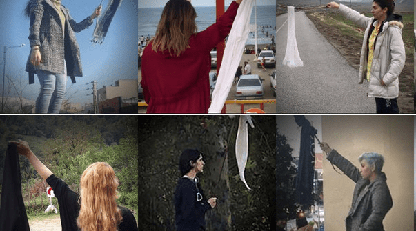

简体
繁體
2024年度全球人权报告
关于我们
我们是谁
工作领域
我们如何运作
我们的工作
信息安全
警察暴力
守护抗议
审查及言论自由
气候人权
区域/国家
中国
新疆
香港
美国
缅甸
马来西亚
如何参与
订阅人权新闻通讯
网络联署
人权公开课
为人权不停笔
加入我们
最新消息
订阅人权电子报
Search
2024年度全球人权报告
关于我们
关于我们
我们是谁
工作领域
我们如何运作
我们的工作
我们的工作
信息安全
警察暴力
守护抗议
审查及言论自由
气候人权
区域/国家
区域/国家
中国
新疆
香港
美国
缅甸
马来西亚
如何参与
如何参与
订阅人权新闻通讯
网络联署
人权公开课
为人权不停笔
加入我们
最新消息
订阅人权电子报
Search
主题
2024人权报告
China
中国
人权捍卫者及行动者
台湾
新疆
新闻自由
香港
国家
中国
新加坡
新疆
日本
韩国
香港
马来西亚
主题
共4个结果
排序
最新
最新
最旧
标题 – 升序
标题 – 降序
伊朗
2024 年 5 月 9 日
2023年度伊朗人权报告
伊朗
2023 年 3 月 28 日
2022年度伊朗人权报告
伊朗
2022 年 11 月 10 日
网络联署：要求伊朗释放瓦希德

伊朗
2019 年 7 月 24 日
伊朗：反对强制佩戴头巾抗议者被迫录“认罪视频”
上一个
下一个